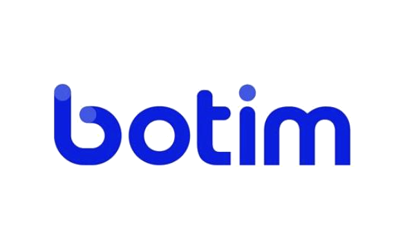
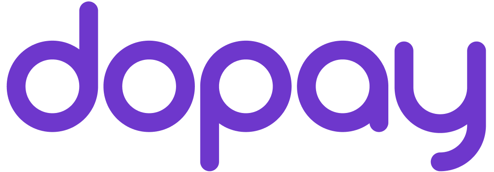
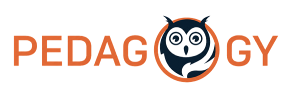

Work
The companies, and the products
I built there.
Five fintech and edtech teams across the UAE, US, and India - from QA and release engineering to leading payments and remittance product.

Astratech (a G42 Company)
UAE's fintech super-app, built on the back of a 150M-users.
Product Manager, Digital Payments & Remittance · Nov 2025 - Present
About the company
What they do: BOTIM started life in 2017 as one of the few VoIP/messaging apps legally permitted to offer voice and video calling in the UAE - quickly becoming the default communication app for the country's large migrant-worker population. In 2024 it was acquired by Astratech, the consumer-tech arm of G42 (Abu Dhabi's $10B+ AI and cloud holding group). Astratech relaunched BOTIM as BOTIM Ultra, a fintech super-app combining messaging, cross-border remittance, digital wallet, bill payments, and (in pre-launch) crypto wallet experiences.
Funding & scale: Astratech is backed by G42 directly; G42 itself raised $1.5B from Microsoft in April 2024 at a reported $20B+ valuation. BOTIM serves 150M+ users globally, with the UAE as its home market and one of the world's largest outbound remittance markets ($43B+ annually).
How they're doing: Aggressively scaling - operates across 150+ remittance corridors with payout partners including TerraPay, JinglePay, Instant Cash, Mastercard Move, MoneyGram, and Fawry. One of the most well-capitalised fintech plays in the region, with a clear thesis around the underbanked migrant-worker segment in the GCC.
What I built here
BOTIM Ultra · G42
Fintech Super App - Remittance & Crypto
Cross-border money transfers within BOTIM's super app. Onboarding 9.7% → 18.8%, +215K active users, 30-day retention 51% → 63%, ~19% YoY revenue growth. Expanded payout coverage via TerraPay, JinglePay, Instant Cash, Mastercard, MoneyGram, Fawry. Pre-launch crypto wallet & digital-asset payments.
Read the case study → Visit BOTIM ↗

Dopay
Banking-as-a-service for the world's cash-paid workforce.
Product Manager · Jun 2022 - Nov 2024
About the company
What they do: Founded in 2014, Dopay is a payroll and digital-banking platform targeting unbanked and under-banked workers, primarily in Egypt and the broader MENA region. Employers upload salary files; Dopay disburses funds onto Mastercard-branded prepaid cards and into mobile wallets, giving workers a real bank account, salary visibility, and card payments - often for the first time. Built in partnership with Bank ABC (Egypt), AFS, Masria Digital Payments, and Mastercard.
Funding & scale: Raised approximately $25M+ to date. Headline round was a $17.5M Series A in 2022, led by Argentem Creek Partners, with participation from earlier backers. Earlier rounds were backed by Accion, Force Over Mass, and Beenext.
How they're doing: A category-leader in MENA payroll digitisation. Egypt - with ~30M workers and a heavily cash-based economy - is the core market, and Dopay's positioning (regulated, bank-partnered, employer-led distribution) gives it a defensible moat against pure-wallet players. Continues to expand corridors and employer base.
What I built here
Retail - Dopay
Instant Salary & Card Lifecycle
iOS / Android salary disbursement app. Salary visibility, instant withdrawal, full card lifecycle. Mastercard network compliance, PCI-DSS, ISO 8583. OCR-based KYC with backend validation cut failed verifications.
Dopay For Business
Payroll for Employers
Web + mobile payroll for employers. Uploads, approvals, settlements, refunds, reversals. Validated ledger entries and real-time payroll APIs. Simulated bulk-payment and edge scenarios for resilience.
Read the case study → Visit Dopay ↗
Mintoak Innovations
Merchant payments SaaS, white-labelled by India's biggest banks.
Lead Product Quality - Merchant Payments & SME Banking · Aug 2021 - Jun 2022
About the company
What they do: Founded in 2017 in Mumbai, Mintoak is a merchant-engagement SaaS platform sold to banks rather than directly to merchants. Banks white-label the Mintoak stack - UPI, card acceptance, POS, QR, soundbox, merchant analytics, lending leads - and offer it to their SME customers. Core integrations include HDFC Bank, SBI, YES Bank, and NPCI-compliant rails.
Funding & scale: Raised approximately $26M total. The headline round was a $20M Series A in March 2024, led by HDFC Bank (a rare direct bank-led equity round) with participation from PayPal Ventures and British International Investment (BII). Earlier seed backers include Pravega Ventures.
How they're doing: Powers merchant solutions for some of India's largest banks, reaching 1M+ merchants. The B2B2B model (selling to banks who sell to merchants) avoids the brutal CAC battle of direct merchant acquisition, and the HDFC equity tie-up gives them deep distribution. Quietly one of the more profitable-by-design fintech infrastructure plays in India.
What I built here
HDFC SmartHub Vyapar
SME Banking & POS
All-in-one SME banking app - eKYC, FDs, loans, business cards. Validated card, UPI, QR, and tap-to-pay on POS devices. RBI + PCI-DSS compliant via secure sessions, OTP, data masking.
Visit Mintoak ↗
Novo
The digital bank for US small businesses and solopreneurs.
Product Automation & Payments Specialist · Mar 2019 - Aug 2021
About the company
What they do: Founded in 2016, Novo is a New York-based digital business-banking platform serving freelancers, solopreneurs, and SMEs underserved by US incumbent banks. Offers FDIC-insured business checking (via partner banks including Middlesex Federal Savings), ACH and wire transfers, Mastercard debit cards, mobile check deposits, integrations with Stripe / Shopify / QuickBooks / Wise (for multi-currency FX), and embedded working-capital products. Compliance and identity stack includes Alloy, Socure, and Castle.
Funding & scale: Raised approximately $170M+ across all rounds. Notable rounds include a $90M Series B in January 2022 led by Valar Ventures (Peter Thiel's fund), and a $40.7M Series A in 2021 also led by Valar. Other backers include Crosslink Capital, BoxGroup, and Rainfall Ventures.
How they're doing: Serves 200,000+ US small businesses and has processed tens of billions of dollars in transactions. Competes with Mercury, Bluevine, Brex, and Relay in a crowded but very large segment. Faced the typical neobank headwinds in 2023-24 (interest-rate dependency, monetization mix) but remains one of the most established SMB neobanks in the US.
What I built here
Novo
US Digital Banking & Intelligent Onboarding
ACH, wires, debit cards, mobile check deposits, cross-border transfers. Multi-currency via Wise (USD/GBP/EUR/AED). OCR onboarding + automated approvals. AML/fraud with Castle, Alloy, Socure.
Read the case study → Visit Novo ↗

Pedagogy
Mobile-first exam-prep and digital book platform for Indian students.
QA & Release Engineering · 2014 - 2019
About the company
What they do: Founded in 2016 in Ahmedabad, Pedagogy is an edtech platform that partners with publishers and authors to deliver digital books, study notes, and test-prep content to students preparing for competitive Indian exams - UPSC, GATE, banking, SSC, and similar. The platform is publisher-friendly (revenue-share with content owners) rather than producing in-house content, which is a different model from Unacademy / Byju's.
Funding & scale: Primarily bootstrapped / angel-funded - Pedagogy has not raised a large institutional venture round publicly. The company has focused on profitable unit economics and publisher partnerships rather than blitz-scaling.
How they're doing: A niche but durable player in the Indian exam-prep market. Survived (and in some ways benefitted from) the post-2022 edtech correction that hit the venture-backed giants, precisely because it didn't take on the burn. Smaller scale than the headline edtech names, but financially healthier.
Visit Pedagogy ↗